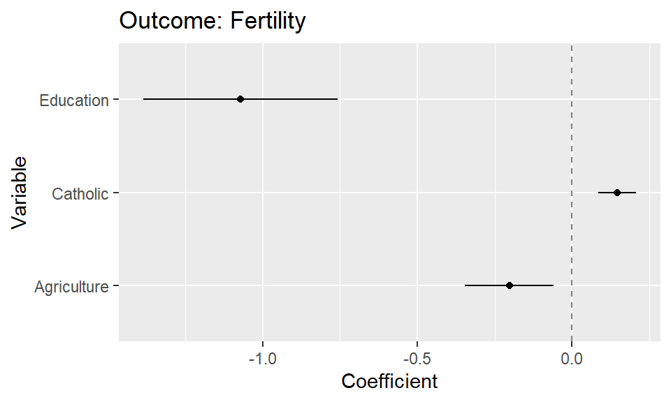

Please explain what the shiny app below does. How does it work and what is it's logic.
ui <- fluidPage(
textInput("name", "What's your name?"),
textOutput("greeting")
)
server <- function(input, output, session) {
output$greeting <- renderText({
paste0("Hello ", input$name, "!")
})
}
shinyApp(ui, server)Build your own app
- Learning outcomes:
- Become proficient in designing and developing a Shiny app from start to finish
- Develop and sketch out ideas about interactive visualization as Shiny app prototypes
- Acquire a holistic understanding of the Shiny development workflow
- Good practices for everyday Shiny programming
1 Schedule for today
| Time | Topic |
|---|---|
| 10:00 - 11:00 | Good practices when building your own app |
| 11:00 - 11:15 | Coffee break |
| 11:15 - 12:00 | Build your own app: Design and UI |
| 12:00 - 13:00 | Lunch break |
| 13:00 - 14:15 | Build your own app: Construct the reactive graph |
| 14:15 - 14:30 | Coffee break |
| 14:30 - 15:30 | Build your own app: Strengthen & deploy |
| 15:30 - 16:00 | Exhibit: Show off your new Shiny app |
This schedule is mostly a suggestion! Depending on the type of app you are building, some of these tasks require more or less time.
2 Good practices
2.1 Use Large Language Models (LLMs)
- LLMs increase productivity and we recommend using it regularly (get used to it)
2.1.1 Attention: Hallucination
- Attention: Always cross-validate the information given by a LLM
- Why? Hallucination.. (see characterization statements on Wikipedia)
- “a tendency to invent facts in moments of uncertainty” (OpenAI, May 2023)
- “a model’s logical mistakes” (OpenAI, May 2023)
- fabricating information entirely, but behaving as if spouting facts (CNBC, May 2023)
- “making up information” (The Verge, February 2023)
- Why? Hallucination.. (see characterization statements on Wikipedia)
- Very good overview on Wikipedia
- Discussions in Zhang et al. (2023), Huang et al. (2023) and Metz (2023)
- Problem less relevant when asking LLMs for function code because you check/test it yourself
2.1.2 Avaible LLMs
- Closed-source
- ChatGPT X (OpenAI, ~Microsoft): https://chat.openai.com/
- Gemini (Google) https://gemini.google.com/
- Amazon Titan: https://aws.amazon.com/bedrock/titan/
- Open-source
- HuggingChat: https://huggingface.co/chat/
- LAMA: https://github.com/facebookresearch/LAMA (open-source = path forward)
- Curated list of papers about large language models
- Top Open-Source LLMs for 2024 and Their Uses
2.1.3 Useful prompts
- LLMs can be used to…
- …code & understand code.
- …solve data management tasks.
- …solve data visualization tasks.
- …solve modeling tasks.
- …understand statistical theory.
- Some exemplary prompts in the sections below.
2.1.3.1 Prompts: code & understand code/functions
- Understand the code of a shiny app:
Followed by:
- Understand a function and its arguments:
Please explain the hyperparamters in this model:
xgb_spec <- boost_tree(
trees = 1000,
tree_depth = tune(), min_n = tune(),
loss_reduction = tune(), ## first three: model complexity
sample_size = tune(), mtry = tune(), ## randomness
learn_rate = tune() ## step size
) %>%
set_engine("xgboost") %>%
set_mode("classification")Followed by:
2.1.3.2 Prompts: Data management & preparation
- Obtain code to recode variable in a dataset:
Please provide dplyr code to rename the following variables and give them better names (lowercaps). Below is the codebook:
pdwrk - Doing last 7 days: paid work
edctn - Doing last 7 days: education
uempla - Doing last 7 days: unemployed, actively looking for job
uempli - Doing last 7 days: unemployed, not actively looking for job
dsbld - Doing last 7 days: permanently sick or disabled
rtrd - Doing last 7 days: retired
cmsrv - Doing last 7 days: community or military service
hswrk - Doing last 7 days: housework, looking after children, others
dngoth - Doing last 7 days: other
dngref - Doing last 7 days: refusal
dngdk - Doing last 7 days: don't know
dngna - Doing last 7 days: no answer- Inquire about necessary preprocessing steps for ML models:
How do I need to prepare and preprocess the data if I want to built a Naive Bayes classifier?
What is particular in data preparation for Naive Bayes that is not necessary for other machine learning models?
How should I ideally preprocess the data that I feed into a Naive Bayes classifier?
I want to build a Naive Bayes Classifier. Please outline the preprocessing steps that you would recommend and provide tidymodels recipe code that includes those step.
Please write the code into a single recipe.2.1.3.3 Prompts: Data visualization
- Get basic plotting code for a variable:
- Explain ggplot2 code and add comments:
- Find out how to modify code:
- Ask general questions:
- Ask general questions:
- Ask how to update old code using newer packages:
2.1.3.4 Prompts: Modeling
- Ask about statistical models:
2.1.3.5 ChatGPT4o: Upload data & generate plot
Load the data into R (here we use the preloaded
swissdataset)Run the code below
# Load necessary packages
# install.packages("synthpop")
library(datasets)
library(synthpop)
library(readr)
# Load the dataset
data <- swiss # load your own dataset here
# View the original swiss dataset
head(data)
# Generate synthetic data to anonymize the original dataset
# The syn function will generate synthetic data while preserving the structure and statistical properties
synth_data <- syn(data)
# View the synthetic data
head(synth_data$syn)
# Replace the original data with the synthetic data
data <- synth_data$syn
# View the modified dataset to ensure it has been replaced correctly
head(data)
# Save the new dataset locally
write_csv(data, "data_fake.csv")- Upload
data_fake.csvand Figure 1 (this is just an example) into ChatGPT4o.

- Use the following prompt. If the plot is not based on that particular dataset, i.e., include the variable names of the dataset, you may have to also add which variables should be mapped in which way.
- As a follow-up you can refine the plot code through prompts (
"Please omit the intercept from the plot").
2.1.4 Github copilot in Rstudio
2.2 Draw the reactive graph (draw.io)
- We have seen various reactive graphs
- Drawing the reactive graph for your own app..
- …helps to understand the reactive logic of your app
- …helps you to find inefficiencies (duplicated code)
- …helps to think about alternative reactive models
- …helps to debug more complex apps
- draw.io: a diagramming or whiteboarding application
- How to
- Download the file for the reactive graph here
- Go to the website draw.io/app.diagrams.net/
- Select “Diagramme speichern in/Save diagrams” -> “Später fragen/Ask later”
- Select “Datei öffnen von Gerät”
- Search for the file you downloaded: “reactive-graph-ess-app.drawio”
2.3 Use the browser inspector
- Browser inspectors are an extremely powerful tool that goes far beyond the scope of this workshop
- It can be used to take a deep look at a website
- What colors and fonts are used?
- How would the Shiny app look like on different screen sizes?
- How would the Shiny app look like to color-blind people?
- How are UI elements translated to HTML and CSS?
- How are widths and heights translated to pixels?
- Which HTTP requests are sent when running the Shiny app?
- Does my website evoke any client-side errors?
- … and a lot more
2.3.1 Browser inspectors in the wild
- Every popular browser has its own implementation of an inspector

2.3.2 Pros and Cons
- Inspectors are useful for:
- Conveying an understanding of essential HTML and CSS
- Fine-tuning the UI of a Shiny app
- Implementing corporate designs
- Inspectors are excessive if:
- The goal is primarily to get a functioning app
- Exploring a new elaborate tool beyond Shiny is a bit too much
2.4 Organize your code
- Shiny code becomes messy really quick!
- It is even more important than in normal code to keep code clean and tidy
- Why should I organize my code?
- It is easier for colleagues to quickly grasp what your code does
- It is easier for you to get back to your project after some time
- Programming with organized code is much faster and much more fun
2.4.1 Functional programming
- Wrap code in functions if:
- It is repeated more than two times
- It is complex and might profit from abstraction
- Bad:
- Good:
2.4.2 Stick to a style guide
- Adopting a consistent coding style drastically improves readability for yourself and contributors
- The styler and lintr packages automatically check your code for style inconsistencies, bad practictes, and possible syntactic/semantic errors
- The following code is valid, but deciphering what’s going on might take a while
2.4.3 Annotate your code
- Even in smaller apps, Shiny code is multiple hundred lines long
- RStudio annotations can help navigate large R code files

2.4.4 Modularize your Shiny code
- If your Shiny app is divided into multiple tabs or sections, it might make sense to wrap it into modules
- By modularizing, you divide a large Shiny app into multiple smaller pieces that are isolated from each other
- Modularization is a very advanced topic and there is an entire chapter in Mastering Shiny – but it is good to know that it’s possible

2.4.5 Build your Shiny app as a package
- This tip is particularly useful for larger apps
- The idea is to build a robust scaffold around the Shiny app
- A number of R packages specialize on this task: Rhino golem, and leprechaun
- Benefits:
- Automatically handles dependencies, no more
libraryandthere is no package called ‘xxx’ - Facilitates sharing Shiny apps without deployment
- Supports multiple Shiny apps in one app
- Enables testing workflows and thus more robust code
- All R code files in one place
- Automatically handles dependencies, no more
3 Data
- To build your Shiny app, we suggest one of the following datasets
3.1 Bring your own dataset
- If you already have a dataset that you want to build an app around, feel free to do this today!
3.3 Guerry dataset
- This dataset stems from the “Essay on the Moral Statistics of France” from 1830, written by André-Michel Guerry
- It features a number of indicators of the so-called “moral statistics”, including crime, literacy, wealth, donations, and more
- The dataset is an
sfdataset containing department polygons of 19th century France – it may thus be convenient for creating an app usingleafletmaps - Base information:
- Region: France
- Time: 1815-1834
- Observations: 85
- Variables: 27
- Source: https://sfdep.josiahparry.com/reference/guerry
- How to read the data:
guerry <- readRDS(url("https://github.com/paulcbauer/shiny_workshop/raw/shiny_workshop_2024/data/guerry.rds"))
guerrySimple feature collection with 85 features and 26 fields
Geometry type: MULTIPOLYGON
Dimension: XY
Bounding box: xmin: 47680 ymin: 1703258 xmax: 1031401 ymax: 2677441
CRS: NA
# A tibble: 85 × 27
code_dept count ave_id_geo dept region department crime_pers crime_prop
<fct> <dbl> <dbl> <int> <fct> <fct> <int> <int>
1 01 1 49 1 E Ain 28870 15890
2 02 1 812 2 N Aisne 26226 5521
3 03 1 1418 3 C Allier 26747 7925
4 04 1 1603 4 E Basses-Alpes 12935 7289
5 05 1 1802 5 E Hautes-Alpes 17488 8174
6 07 1 2249 7 S Ardeche 9474 10263
7 08 1 35395 8 N Ardennes 35203 8847
8 09 1 2526 9 S Ariege 6173 9597
9 10 1 34410 10 E Aube 19602 4086
10 11 1 2807 11 S Aude 15647 10431
# ℹ 75 more rows
# ℹ 19 more variables: literacy <int>, donations <int>, infants <int>,
# suicides <int>, main_city <ord>, wealth <int>, commerce <int>,
# clergy <int>, crime_parents <int>, infanticide <int>,
# donation_clergy <int>, lottery <int>, desertion <int>, instruction <int>,
# prostitutes <int>, distance <dbl>, area <int>, pop1831 <dbl>,
# geometry <MULTIPOLYGON>- Datamap:
| Column | Description |
|---|---|
dept |
Department ID |
region |
Region of France (‘N’=’North’, ‘S’=’South’, ‘E’=’East’, ‘W’=’West’, ‘C’=’Central’) |
department |
Department name |
crime_pers |
Population per crime against persons |
crime_prop |
Population per crime against property |
literacy |
Percent of military conscripts who can read and write |
donations |
Number of donations to the poor |
infants |
Population per illegitimate birth |
suicides |
Population per suicide |
main_city |
Size of the principal city (‘1:Sm’, ‘2:Med’, ‘3:Lg’) |
wealth |
Per capita tax on personal property |
commerce |
Rank of the number of patents per population |
clergy |
Rank of the number of Catholic priests in active service population |
crime_parents |
Rank of the ratio of crimes against parents to all crimes |
infanticide |
Number of infanticides per population |
donation_clergy |
Number of bequests and donations to the clergy per population |
lottery |
Per capita wager on Royal Lottery |
desertion |
Number of soldiers accused of desertion minus the deficit produced by insuffiency of available billets |
instruction |
Inverse literacy |
prostitutes |
Number of prostitutes registered in Paris |
distance |
Distance to paris in km |
area |
Area in km² |
pop1831 |
Population in 1831, in thousands |
4 Exercises
Exercise 1: 11:15 - 12:00
Taking one of the datasets introduced above – ESS, Guerry, or your own dataset, reflect on a possible Shiny app that you can build using the dataset. Create a sketch and design a prototype of the user interface based on this sketch.
Exercise 2: 13:00 - 14:15
Based on the prototype developed in exercise 1, sketch a reactive graph. Try to implement this reactive system in the server function of your app.
Exercise 3: 14:30 - 15:30
Deploy the app created in the last exercise using either https://www.shinyapps.io/ or shinylive.
References
Huang, Lei, Weijiang Yu, Weitao Ma, Weihong Zhong, Zhangyin Feng, Haotian Wang, Qianglong Chen, et al. 2023. “A Survey on Hallucination in Large Language Models: Principles, Taxonomy, Challenges, and Open Questions,” November. https://arxiv.org/abs/2311.05232.
Metz, Cade. 2023. “Chatbots May ‘Hallucinate’ More Often Than Many Realize.” The New York Times, November.
Zhang, Yue, Yafu Li, Leyang Cui, Deng Cai, Lemao Liu, Tingchen Fu, Xinting Huang, et al. 2023. “Siren’s Song in the AI Ocean: A Survey on Hallucination in Large Language Models,” September. https://arxiv.org/abs/2309.01219.